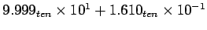
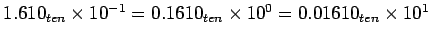
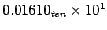
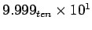
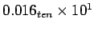
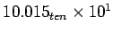
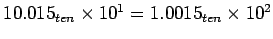
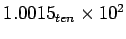
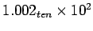

ตัวอย่างดังต่อไปนี้เป็นการแสดงการบวกเลข Floating Point ระหว่าง  โดยสมมุติให้มีเพียงสี่หลักสำหรับ Significant และ 2 หลัก สำหรับ Exponent

ซึ่งเลข  มีส่วนของ Exponent เท่ากับตัวตั้ง 
ดังนั้นในขั้นแรกจะทำการเลื่อน Significant ของเลขที่น้อยกว่าไปทางขวาจนกระทั่งค่าของ Exponent มีค่าเท่ากับค่าที่ใหญ่กว่า เนื่องจาก Significant มีเพียงสี่หลักหลังจากการเลื่อนจะได้

9.999
+ 0.016
-------
10.015
ผลลัพธ์จะได้ 


ทำการปัดเศษจะได้

รูป 3.14 แสดงระเบียบวิธีการบวกเลขไบนารี Floating-Point ในขั้นตอนที่ 1 และ 2 มีลักษณะคล้ายกับตัวอย่างที่ได้แสดงขั้นต้น โดยการปรับค่า Exponent ของเลขที่น้อยกว่าให้มีค่าเท่ากับเลขที่มากกว่า ในขั้นตอนที่ 3 ทำการ Normalized ผลลัพธ์ และทดสอบ overflow และ underflow
รูป 3.15 แสดงโครงสร้างของฮาร์ดแวร์สำหรับบวกเลข Floating Point